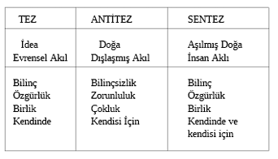

BİRİNCİ BÖLÜM
BİR EVRENSEL BAĞINTILILIK SİSTEMİ OLARAK HEGEL DİYALEKTİĞİ
Hegel, tarih boyunca doğup batmış bütün felsefe akım ve okullarını, tek evrensel felsefenin parçaları ve aşamaları olarak görüyor, kendi sistemini de, gene bu tek evrensel felsefenin bir yanı, fakat onun gelişmesinin bir sonucu ve tamamlanmış hali olarak sunuyordu. O’na göre, kendisine gelinceye kadar ortaya konulmuş olan her düşünce, her tez, kendi sistemi içinde aşılmış, içerilmiş ve düzenlenip tamamlanmıştı. Tarih içinde felsefe, tikel bölünmelere uğramış olarak görünse de, gerçekte bölümlerin hepsi, mantıksal olarak birbirini izliyor, mantıksal olarak birbirine bağlanıyor, birbirinden doğuyor ve diyalektik hareket içinde birbirinden ayrılarak, tekrar birleşerek bir bütün oluşturuyorlardı.
Hegel, farklı sistemlerin tarih içinde ortaya çıkışlarını, “idenin kavramsal belirlenimlerinin mantıksal tümdengelim içindeki sıralanışı” ile aynı görüyor, bu hareket içinde düşüncenin evrilişini, “ide”nin kendisini açıp yaymasının evreleri olarak yorumluyordu. O’na göre, eğer her felsefi sistemin temel kavramlarını, “dış formlarından ve tikele uygulanmalarından tamamen soyutlayıp alacak olursak, ide’nin belirleniminin mantıksal kavramı içindeki çeşitli derecelerini” elde ederdik. Örneğin bu çalışmada biz, antikçağ doğa felsefesini “töz” ve “oluş” kavramlarıyla özetlemiş, bu kavramları felsefenin o döneminin belirlenimleri olarak ele almıştık. Hegel, bütün bir felsefe tarihinin böylece kavramların hareketine indirgenebileceğini ileri sürerken, bir bütün olarak evrenin kuruluşuna ilişkin teorisini uygulamış oluyordu.
Burada iki önemli düşünceyi ayırt edebiliriz:
Birincisi: Felsefi düşüncenin gelişmesi, başlangıçta bulunan örtük bir tümelliğin açılıp yayılmasının sürecinde gerçekleşir.
İkincisi: Bu açılıp yayılma, rastgele bir yol izlemez, mantıksal bir sıra içinde zorunlulukla ilerler.
Bu temel tez, daha genel bir evrensel bağıntılılık ve gelişme düşüncesinin yansımasıdır. Felsefenin bu hareket tarzı, kendine özgü olmayıp, evrende bulunan her şeyin genel oluş ve gelişme tarzının özel bir alanda gerçekleşmesinden ibarettir. Evrenin bağıntılı bütünlüğü ve bu bütünün mantıksallığı, felsefe tarihinin hareketinde kendisini böylece gösteriyor. Demek ki Hegel, kendi sistemini “tek evrensel felsefe”nin sürekliliği içinde ve onun bir bölümü olarak, ama tamamlanmış ve yetkin bir sonucu olarak, tanımlarken “evrensel, diyalektik oluş ve bağlanış yasalarına” dayanıyordu.
Hegel, yalnızca felsefe tarihine değil, doğanın oluş ve evrilişine de, insan toplumunun tarihine de aynı bağıntılı ve mantıksal bütünlüğün tikel görünümleri olarak bakıyordu. Evrenin bütünlüğü ve bağıntılılığı hakkındaki bu kavrayış, Hegel diyalektiğinin hem ilkesidir, hem de diyalektiğin kendi gerçekliğini bulduğu ve kendini inceleyip anladığı alandır.
Burada karşımıza şu önemli sonuç çıkıyor: Hegel’e göre, “ide”nin (ya da aklın) hareketinin doğası ile, dış dünyanın hareketinin doğası aynı-özdeş yasalara dayanır; her ikisi de diyalektiktir. Aslında bu özdeşlik, akıl ve dış dünya arasındaki özdeşliğin bir ifadesidir. Özdeştirler, çünkü her ikisi de “akıl”dır. Öyleyse aklın dış dünyayı kavraması, aslında kendisini kavramasıdır. Dış dünya denilen şey, aklın bir yansımasından başka bir şey değildir. Böylece, “metafiziğin aldanmasına yol açan görünüşteki bu bölünme”, gerçekte birliktir. Zihin ve dünya, bir ve aynı evrendirler. Bundan ötürü ikisi de diyalektiktir.
A. HEGEL SİSTEMİNDE EVRENSEL BAĞINTILILIK KAVRAMININ MANTIKSAL TEMELLERİ
1. KAVRAM HAREKETİNİN KARAKTERİSTİĞİ: BAĞINTILILIK
Hegel diyalektiği, bir kavramlar diyalektiğidir. Nesnel dünyanın öncülünün kavramların hareketi olduğunu ileri süren temel teze dayanarak, kavramların hareketinin diyalektiğini keşfetmekle, dış dünyanın hareketinin yasalarını da içeren bir bütünlüğe ulaşılacağını iddia eden bu diyalektik, idealisttir. Ne var ki bu idealizm, kendisinden önceki metafizik idealizmden köklü bir kopuştur. Metafizik idealizmde, kavramlar, saf, mutlak, değişmez ve hareketsiz katılıklar olarak düşünülmüş ve kullanılmışlarken, Hegel, her kavramın kendi karşıtıyla yüklü, çelişkili ve bu yüzden de hareketli ve doğurgan olduklarını gösterdi. “Kavramın kendisini ileri atmasını sağlayan bir şey bulunduğunu”, bunun da gene o kavramın içinde o kavramın olumsuzu olarak taşındığını söyleyerek, eski anlayışa göre herhangi bir hareketin konusu olamayacak olan kavramları, kendi hareketlerinin sebebi ve konusu halinde düşündü. Böylece “kendi içindeki olumsuzun”, kavramı, “içsel bir çelişkiyle yüklü, içtepiye sahip, hareketli, canlı” kıldığı fikri, bir kavramın kendisinden başka bir kavramı bu hareket dolayısıyla doğurduğu buluşuyla tamamlandı.
Hegel’e göre, çelişki her türlü yaşamın köküdür. Bir şey, ancak kendisinde bir çelişki taşıdıkca hareket eder. Çelişki dolayısıyla, bir kavram ya da bir şey, kendi özdeşliğinin aşılmasına uğrayarak farklılaşır ve karşıtına geçer. Fakat, iç çelişmenin yol açtığı bu hareket boyunca kavram ya da şey, yalnızca karşıtına geçmekle, farklılaşmakla kalmaz, aynı zamanda bütün diğer kavramlara da bağlanır.
Bu doğuş ve bağlanış sürecinin Hegelci tasvirini şöyle özetleyebiliriz:
Her kavram, başlangıç haliyle bir “tez”dir. Tez, bir olumlamadır ve kendi varlığı ile taşıdığı karşıtlığın birliğidir. Tez, karşıtlığı aşma yönünde hareket eder, çünkü, taşıdığı karşıtlık dolayısıyla kavram, kendinde ve olanak halindedir, bundan çıkmak, kendi için ve gerçeklik haline gelmek zorundadır.
Hareketi içinde çelişki çözülerek, anti-tezin varlık nedenini oluşturur. Böylece tez dolaylanır, bir başka’ya bağlanır: “Burada birinci terim (tez), özünden başkasının içine batırılmıştır.” (Hegel) Anti-tez, tezin hareketinin içinden ve tezin hakikati olarak doğar.
Hareket burada durmaz: Bir başka’nın başka’sı olan anti-tez, kendi başka’sını da içinde taşımaktadır. Bundan dolayı, anti-tez, bir şeyin (tezin) olumsuzlanması olarak kalamaz, kendisi de olumsuzlanır.
“Sentez”, Hegel’in diliyle aktaracak olursak, “Dolaylı ile dolaysızın birliğinin sağlandığı dolayım anı” olarak ortaya çıkar. Bu yüzden sentez, “dolayımın aşılması sayesinde basit, olumsuzun aşılması sayesinde olumlu”dur. Öyleyse, sentez de bir tezdir ve süreç böylece devam eder.
Başlangıçta dolaysız bir tümel olan kavram, hareketi içinde kendisini ve kendisinin başkasını, kendi içinden türetir. Türetme, süreç içinde sürekli olarak yeni belirlenimlerin doğuşu ile ilerler.
Bir kavram, iç çelişmesinin yol açtığı ilerleyişinin aşamalarında, ortaya çıkardığı her yeni kavramda kendini korur: “Sonraki belirlenimin her aşamasında, o, kazanılmış içeriğinin bütün kütlesini yükseltir ve diyalektik ilerleyişiyle yalnızca geride hiçbir şey bırakmamakla kalmaz, bütün kazanılmışı da toparlayıp götürür, zenginleşir ve kendi kendisinde yoğunlaşır.” (Hegel)
Kavramın yapısından doğan bu genişleme ve zenginleşme, kopuk ve kendi başına bir ilerleyiş değildir. Başlangıçtan sona kadar her yeni kavramın ve her yeni belirlenimin eskiyi bir yandan koruduğu, bir yandan da aştığı sürekli ve bağıntılı bir süreçtir. Öyleyse kavram hareketi, başlangıçta boş, içeriksiz olan kavramın sonradan dışsal bir şeyle birleşerek zenginleşmesi değildir; kavram hareketinin bir zenginleşme ve açılıp yayılma olması, varolan bütünün kendi ayrımlarını ortaya çıkarmasıdır.
Özetle, tek bir kavramdan başlayarak, mutlak idea’ya ulaşıncaya kadar bütün kavramlar birbirlerinin içinden doğar ve bütün bir evren tablosunun tamamlanmasına kadar hareket devam eder. Her bir kavramın bir diğeriyle ve bütün diğer kavramlarla bu birbirinden doğma, birbirine dönüşme ve birbirine geçişme bağıntısı, kesintisiz bir birlik oluşturur.
Başlangıç kavramı, kendinden çıkacak olan bütün kavramları potansiyel olarak içerir; onların çelişkiden doğan hareket boyunca açılıp gerçekleşmeleri sürecinde kendi gerçekleşmesini görür. İlerleyen hareket sonunda, ulaşılan en son kavram, kendinden öncekilerin hepsini kapsar. İdea’nın mantıksal serüveninin sona erdiği bu nokta, artık “kavram” kategorisinin oluştuğu noktadır.
Gene felsefe tarihi üzerinde örnekleyecek olursak, başlangıçta ileri sürülmüş felsefi tez ve düşünceler, henüz olanak halinde birçok kavramın açılıp tanınmasına yol açabilecek bir dolulukla ortaya çıkmışlardı. Ancak, ne şekilde ve ne zaman gerçeklik haline gelebileceğini, hangi açılımlara ulaşabileceğini, tamamlanmış zenginliğinin ne olacağını bilemezdi. Bu haliyle, başlangıçtaki felsefi düşünce “kendinde” idi. Çelişmeli yapısı, onun kavramlarının yeni ve başka kavramlar doğurmasına yol açtı. Örneğin materyalist ilkeler üzerine kurulmuş olan doğa felsefesi, kendi kavramlarının gelişmesi sonucunda idealist sistemlere doğru gelişti. Ve başka birçok sisteme bölünerek, gittikçe daha zenginleşerek çoğaldı ve yayıldı. Bu dağılış ve açılış-çoğalış sürecinde, kendi varlığının imkânlarını tanıdı. Her bir yeni sistem, kendisinden öncekileri aşarak, yok ederek fakat diğer yandan onları kendi içinde koruyarak doğdu. Böylece başlangıçtaki soyut içerik, gittikçe belirgin, açık ve zengin hale gelerek somutlaşmaya yöneldi. En sonunda, bütün sistemleri kendi içinde taşıyan ve onları aşılmış, karşıtlıkları çözümlenmiş halleriyle içeren Hegel sistemi doğdu. İdea’nın felsefi düşünce olarak kendini gösteren halinin çatışmalı hareketi, sonunda bu hareketin mantıksal gereği olan, yani kendisinden öncekilerin hepsini kapsayan en yüksek noktasına ulaşmış oldu.
Elbette, böylece Hegel’in kendi felsefesinin “son felsefe” ilan ederek, kendi diyalektiğinin de inkârına ulaştığını görebiliriz. “Tamamlanmış son hal” kavramının bir bitiş ve kendi üstüne yıkılış olduğunu söyleyen Hegel, belki de aslında idealizm alanında yapılacak başka şey kalmadığını söylemekteydi.
Burada önemle vurgulanan temel düşünceler şunlardır:
— Her kavram ve her şey, açılıp ilerleyişinin her aşamasında, ortaya çıkan her yeni kavramda ve yeni şeyde, kendisini korur ve sürdürür.
— Her kavram ve her şey, kendi karşıtını, kendi başkasını kendi içinde taşır.
— Kavram, ya da şey, hareketi boyunca kendisini daima yetkinleştirerek sürdürür. Ortadan kalkmaz. Böylece, kendinden öncekileri aşılmış halleri içinde kapsarken, kendisinden sonrakileri de potansiyel olarak içerir.
— İlk kavram, sonrakilerin açılmamış bütünlüğü, son kavram ise öncekilerin sentezidir.
Konuyu bir de evrensel aklın hareketi üzerinde örnekleyelim:

1) TEZ: Evrensel akıl.
Kendinde bir imkânlar bütünlüğü. Tinsel, özgür, kalıcı ve bütünsel.
Kendisini tanımak için, kendisini açıyor ve dışlaşıyor.
2) ANTİ-TEZ: Doğa.
Maddi ve bilincinden ayrılmış hal. Determinizm yüzünden özgürlüğünü yitirmiştir. Sürekli oluş halinde olduğu için kalıcılığı parçalanmıştır. Tikel nesneler halinde bölündüğünden birliği yok olmuştur.
3) SENTEZ: İnsan aklının ve kültürün dünyası.
Evrensel aklın özüne ve doğasına uygun bir dünya. Doğanın bilinçsizliğinin aşılması olarak bilinçli. Bölünmüşlüğün kavranması dolayısıyla bütünsel. Kesintililiğin aşılması sayesinde sürekli. Zorunluluğun bilincine erdiği için özgür.
Başlıca özellikleri, tez, anti-tez, sentez üçlemesine göre sınıflandırırsak, kavramın karşıtına geçişi ve karşıtlığın aşılması, şöyle görülebilir:
Böylece bütün evren, tek bir akış sürecinde, bütün parçalanma ve dağılmalarında bile bağıntılılığını koruyan bir yapı olarak karşımıza çıkıyor. Kavramsal evrenin içten doğuş ve bağlantılanış niteliği, evrenin bütün tikel parçaları için geçerli, ortak bir niteliktir. Diyalektiğin ayırt edici tezi budur.
2. VAROLUŞUN BELİRLENİMLİ YAPISI
Önce Hegel’in dilinde “varoluş” kavramının ifade ettiği anlamı görelim.
Hegel, varlık ve varoluş kavramlarını, hiçlik (ya da yokluk) ve oluş kavramları ile ilişkileri içinde tanımlar. Varlık ve varoluş arasındaki ayrım, bu diğer kavramlarla bağıntıları içinde ortaya çıkar.
Varlık, belirlenmemiş, yalın ve saf öğedir. Sistemin başlangıç kavramıdır.
Bu tanımın kaynağı nedir?
Varolan her şeyi, nesneleri, düşünceleri vs. taşıdıkları belirlenimlerden soyutlarsak, yani onları ağırlıklarından, renklerinden, şurada veya burada oluşlarından, şu veya bu zamanda bulunuşlarından ayırırsak, bütün nicelik ve niteliklerini bir yana bırakırsak, ona verebileceğimiz son yüklem, “vardır” terimi olacaktır. Varlığı dışında, ondan alabileceğimiz hiçbir özellik ve belirlenim, onu yok etmeye yetmez; ama “vardır” yükleminin alınması halinde, artık o Şey’den söz etmek mümkün olmayacaktır. Böylece “varlık” kavramı, şeyin en soyut ve en son kavramı olup tüm nesne ve olguların en son ortak kavramıdır.
“Varlık” kavramı, saf belirlenimsizliği, dolaysızlığı ifade eder. Her türlü belirlenimden önce gelir ve bu yüzden mutlak hareket noktasıdır. “Bu varlık hakkında ne bir duyum, ne bir görü, ne de bir tasarım elde edilebilir, çünkü, o saf düşüncedir ve bu haliyle de başlangıcı meydana getirir.” (Hegel)
Diğer yandan, bu haliyle ve bundan ötürü, “varlık”, “hiçlik”le özdeştir. Hegel’in en fazla yadırganan bu tezini, gene kendi dilinden aktaralım: “Bu varlık, saf ve belirlenimsiz boşluktur. Onda hiçbir şey kavranamaz. Hakkında herhangi bir şey de düşünmek olanaksızdır. Başka deyişle o, aynı zamanda bu boş düşünceden ibarettir. Varlık, bu belirlenmemiş dolaysız, gerçekte hiçlik’tir. Ve hiçlik’ten ne eksik, ne de artık bir şeydir.”
Varlık, nasıl belirlenimsizse, hiçlik de öyledir. Bu belirlenimsizlik düzeyi, ikisini özdeş kılar.
Peki, “varlık”a herhangi bir belirlenim yüklendiğinde ne olur? İşte o durumda, varlık, bir başka ile ilişkiye sokulmuş olur ve “varoluş”a geçer. Varoluş, belirlenmiş varlıktır. Belirlenme ise, daima bir bağıntılanmadır. Her yeni belirlenim varoluşu, tamamlanmış, yani evrensel olarak bağıntılılanmış hale yaklaştırır.
Buradan şu çok önemli sonuç çıkar: Bir varlığı tam olarak bilmek, onun bütün bağıntılarını, dolayısıyla evrensellik içindeki yerini açabilmek demektir.
Önceki bölümlerde, Aristoteles’in bir şeyin varlığını bilebilmek için ona uygulanması gereken on kategori saydığını görmüştük. Orada, bu on kategori, nesnenin tanımlanabilmesi için gerekli ve mümkün bütün yüklemlerin sınıflandırılmasını temsil ediyordu. Aristoteles, bu tümel kavramların, nesnenin kendisiyle birlikte varolduklarını ve onlara öncel olmadığını da eklemişti.
Hegel, kategorilerin nesneye dışsal bir varoluşlarının bulunmadığını söylüyor. Her varlık, kendi belirlenimlerini kendi içinde taşır. Ve onları dışlaştırarak kendi varoluşunu gerçekleştirir. Aristoteles’te yüklemlerin sınıflandırılmasına karşılık düşen yapılar olarak görülen kategoriler, Hegel’de varlığın içsel bir öğesi olma değeri kazanıyor.
Hegel’i izleyecek olursak, belirlenimsiz varlık’ın kendi iç olumsuzu ile çatışarak, kendi ilk belirlenimini kendi iç çelişkisinden çıkarmasını gözlememiz gerekecek. Bu dışa vuruş, bir başka ile dolaylanmak ve bir başka şeyle belirlenmek demektir. Böylece, her türlü bağıntılanmadan yoksun olan, bundan ötürü de hiçlikle özdeş olan varlık, başka bir kavramla belirlenmiş ve oluş halinde varlık, yani “varoluş” ortaya çıkmıştır. Belirlenmiş varlık, hareketi boyunca, daima yeni belirlenimler kazanacak, her yeni bağıntı onun özel bir varoluşunu gerçekleştirecek, diğer varoluşlardan onu ayıracaktır. Bu aynı zamanda bir sınırlanmadır. Sınırlanma, sınırın ötesi ile de belirlenme demektir. Öyleyse belirlenmiş varlık, yalnızca kendi belirlenimleriyle değil, karşıtının, kendi ötesindekilerin de belirlenimleriyle yüklenecektir. Öyleyse, kendi sınırlarıyla ayrıldığı evrensel bütünlüğün bir yanı olarak kalmaya, ayrıldıklarıyla da bağıntılı kalmaya devam etmektedir. Sınır konularak belirlenmiş varlık, sınırlarının dışında kalanların olumsuzlanmasıyla da belirlenmektedir. Ama eğer sınır, varoluşun kendisine ait bir belirlenimi olmasaydı, onun dışından da söz edilemeyecekti. Varoluşun belirlenimi, varoluş olmayanın (olumsuzun) belirlenimlerinde yansıyarak kendine dönmüş ve fark doğmuştur. Ayrılma (fark), hem bir başka ile birleşmedir, hem de ayırıcı belirlenimin karşıtıyla bağıntılanmadır. Sonuç olarak şuraya ulaşıyoruz: Tek bir varoluş, varoluşunu, ancak bütüne ve bütünün her yanına bağıntılı olarak gerçekleştirebilir. “Belirlenmiş, tamamlanmış bir varlık, bir başka varlığa ilişkili olan varlıktır; başka bir muhteva ile, bütün dünya ile bağıntı içinde olan bir muhtevadır bu. Bütünün karşılıklı belirlenme bağıntısı konusunda, aslında bir tekrarlamadan başka bir şey olmayan şu belirlemede bulunabilmişti metafizik: Bir tek toz tanesi yok edilebildiği anda, bütün evren yıkılır.” (Hegel)
B. EVRENSEL BAĞINTILILIK KAVRAMININ NESNEL TEMELLERİ
Hegel, materyalist atomculuğun bir varlık teorisi olarak ortaya koyduğu bağıntılılık fikrini kavramların varoluşuna uyguluyor. Kavramlar ve kategoriler, başlangıçtan sona kadar birbirini izleyen, gittikçe yükselen bir bütünlük gösteriyorlar. Bu bütünlük içinde her kavram ya da kategori, sistemi meydana getiren diğer kavram ve kategorilerle öylesine bağıntılıdır ki, tek bir kavramın sistem içinden çekilip alınması, hatta yerinin değiştirilmesi, bütün sistemi yıkacak ya da yeniden kuruluşunu gerektirecektir.
Fakat Hegel’in evreni, yalnızca düşünceden, yalnızca kavramlardan kurulmuş değildir. Evrensel bütünlüğün bir yanını da, düşüncenin hareketinin bir yansıması ve zorunlu sonucu olan maddi dış dünya oluşturur. Aynı bağıntılı bütünlük ve bunu yöneten yasalar orada da görülür. Nasıl kavramlar arasında zorunlu ve düzenli bir bağıntılılık varsa, kavramların bir yansıması olan nesneler arasında da öylesine zorunlu bağıntılar vardır.
Kavramların kendi aralarındaki bağıntılılık ve nesnelerin kendi aralarındaki bağıntılılık, iki farklı düzey olarak görünürler: Fakat Hegel orada durmaz; kavramlarla nesnelerin de birbirine bağlı oldukları ilkesine ulaşır. Hegel’in hiçbir kavramın tek başına bir gerçekliği olamayacağını anlatan önermesi, yalnızca kavramlarla kavramların bağıntısını değil, nesnelerle nesnelerin ve kavramlarla nesnelerin bağıntısını da içerir.
Hegel, tümel kavramların soyutlulukları dolayısıyla evrensel olduğunu düşünmüş olan metafizik idealizme karşı, tümelliğin, “tikelin, bireyselin zenginliğini de içinde taşıdığı” için evrensel olacağı yeni bir ilişki önerir. Öyle ki, kendisinden öncekilerden farklı olarak Hegel, kavram ile nesnesi arasında içten bir bağıntı ve denk düşme koşulu arar: “Şeylerin nesnel kavramı, doğrudan doğruya şeylerin doğasını meydana getirir.”
Bu gözlem, Hegel’de, evrensel bağıntılılık kavramının gerçekleştiği bir başka alanın, düşüncenin hareketinden başka bir alanın da bulunduğu düşüncesine ulaşıldığını gösteriyor.
V.I. Lenin, Hegel üzerine notlarında, materyalizme yaklaşan ya da apaçık materyalist temellere dayandığı izlenimi veren ifade biçimleri gösterir.
Dış dünyanın gerçekliği konusunda bir kuşkusu bulunmayan Hegel, bunun kavramların hareketinin bir mantıksal sonucu olarak doğduğunu söylemekle idealizm içinde yer alır. Dış dünya, aklın hareketinin bir yansımasıdır ve bu süreçte akıl, dış dünyanın varolmasının öncülüdür. Hegel, bu öncülleri açıklamak ya da tanıtlamak istediğinde, doğaya, insan toplumunun tarihine sık sık başvurur. Hegel, idealist sisteminin açıklanmasında, maddi dünya ile ilişki içinde bulunmasını bir çelişki olarak görmez. Diyalektiğinin kendince nesnel doğası bu türden bir indergeme için elverişlidir.
Bununla birlikte, Hegel’in bakış açısında modern materyalizme yönelen önemli özellikler, onun, nesnelliği aklın hareketi olarak kavramasına denk düşer biçimde, bu nesnelliğin gerçekliğini, insanlı dünyanın ve kültürel doğanın ilişkilerinde aramasından doğmuştur diyebiliriz. Böyle bir tanıtlama sürecinde, soyut evrensel akıl olarak değil, fakat tarihsel insan aklı olarak anlam ve etkinlik kazanan “akıl” kavramı, materyalizme zemin açan bir fonksiyonla yüklenmiş olur.
Ne var ki, sistemin bütünlüğü içinde düşünüldüğünde, bu durum, Hegel’in felsefesinin bir yanıyla Prusya monarşisinin onaylanmasına, diğer yandan da en ihtilalci sonuçlara yol açmasına açıklama getiren bir çelişme sergiler. Özellikle siyasal pratik açısından bakıldığında, Hegel sisteminin “ihtilalci yanı, tutucu yanının taşkını altında boğulmuştur... Fakat bütün bunlar, Hegel sisteminin önceki sistemlerden herhangi birisiyle kıyas edilemeyecek kadar geniş bir sahayı kucaklamasına ve bu sahada bugün bile hayranlık uyandıran bir düşünce zenginliği geliştirmesine engel olmuyor...” (Engels)
Bunun nedenini, yalnızca diyalektiğin ihtilalci özünde değil, bu özün kendisinin gerçekleşmesi olarak gördüğü toplumsal insan dünyası ile ilişkisinde de aramak gerekir. Hegel, erekli insan etkinliğini, mantıksal bir kategori olarak değerlendirirken, Lenin, bu çabanın, mantık kategorilerinin insan etkinliğinin tarihselliği içinde doğmuş olduğunu gösterebilmek için ortaya konulduğu yorumunu getiriyor ve burada “son derece derin ve tamamıyla materyalist bir muhteva” buluyor.
Ancak “tersine çevrildiğinde”, yani “soyut evrensel akıl” gibi “başı üzerinde duran” bir kavram yerine, “tarihsel insan etkinliği içinde görünen, toplumsal insan aklı” gibi “ayakları bu dünyaya”, insan etkinliği içinde dönüştürülen ve insanın dönüşmesinin zemini olan üretimin ve savaşın dünyasına bakan bir kavram açısından ele alındığında, görülebilecek olan bir muhtevadır bu. Hegel’in modern materyalizme “teğet geçtiği” pasajlardan birini inceleyerek Lenin’in yorumunu anlamaya çalışalım: “İnsan, ihtiyaçlarıyla pratik şekilde dış dünyaya bağlar kendini; ve doğadan yararlanarak doyumunu sağlarken, aracı durumunda iş görmektedir. Doğanın nesneleri güçlüdür gerçekten ve çok yönlü bir direnç gösterirler. Onları istediği şeyler olmaya zorlamak için, başka nesneler koyar insan araya yani doğayı doğaya karşı kullanır; ve bu amaçla aletler icat eder. İnsanın bu yoldaki icatları, zihnin işidir doğrudan doğruya; ve böyle bir alet doğadaki nesneden daha değerli olmak gerekir... insanın doğayı istediği şey olmaya zorlamak üzere gerçekleştirdiği icatların şan ve şerefi (Yunanlılarda), tanrılara aktarılmıştır.”
Burada önemli olan, mantık kategorileri ile insanın toplumsal etkinliğinin iç içe düşünülmüş olmasıdır. Mantığa veya zihinsel etkinliğe bir öncelik verilmiş olsa da, sonuçta tarihsel ve mantıksal aynı düzlemde, toplumsal pratik düzleminde birbirine geçmiştir. Böylece aletli üretim veya aletin üretimi süreçlerinde, “zihin”e tanınan öncelik, Hegel idealizminin bir karakteristiği olarak yerini almış olsa da, düzeylerin karşılıklı bağıntılılığı kavramı içinde bu şema kendiliğinden aşınmaya uğramış ve Hegel, tanrılar karşısında insanın hakkını teslim etmiştir.
Hegel, nesnel gerçeklik ile kavramlar arasındaki bağıntılılığı koymakla, öznel idealizmin bilgiyi sınırlayan ya da tamamen imkânsız gören anlayışının karşısında yer alır.
Metafizik materyalizmin ve ampirizmin genel olarak felsefeyi, özel olarak da tümdengelimci metodolojiyi aşağılayan tavrını da, gene aynı ilkeden hareketle karşısına koyar.
C. METAFİZİK TÜMDENGELİM VE TÜMEVARIM KARŞISINDA HEGEL
Hegel’e göre, dogmatik metafizik, düşüncenin belirlenimlerinin şeylerin özsel belirlenimlerini oluşturduğunu kabul eder. Şeylerin düşünce ile bilinebilir oluşundan, şeylerin düşünce ile oluşturulduğu fikrine ulaşır.
Hegel’e göre dogmatik metafiziğin yanılgısı şöyle özetlenebilir:
— Anlığın belirlenimlerinin içeriğini ve değerini araştırmaz.
Bu belirlenimlerin hangi biçimler altında mutlakın yüklemi olarak olumlanacağını araştırmaz.
Örneğin, varoluş, sonluluk sonsuzluk, birlik, bütünlük gibi yüklemlerin “kendinde ve kendi için doğru olup olmadığı, ya da yargının hakikatinin biçimi olup olmadığını düşünmez.”
— Her bir belirlenim, kendi hareketi içinde ele alınmaz, yalnızca anlık düzeyinde ve dışsal olarak şeyin yüklemi haline getirilir. Örneğin, Hegel’e göre, “Tanrı vardır” denildiğinde, varoluşla tanrının nasıl yüklemlendiği düşünülmelidir. Her iki kavramın (Tanrı ve varoluş) içsel hareketleri dolayısıyla birlikleri, karşıtlıkları dolayısıyla özdeşlikleri açıklanabilmelidir. Oysa metafizik dogmatizm, her bir kavramı, tamamlanmış, dayanaklarıyla kendilerini apaçık somutluklar olarak ortaya koymuş şeyler gibi olmakta ve bunları hareketsiz bütünlükler olarak birleştirmektedir.
Öyleyse metafizik dogmatizmin yanılgısı, Hegel bakımından, metodiktir. Karşıtları mutlak olarak karşıt alan ve bunu sonlunun tabiatından çıkaran metafizik, bu anlık düzeyinde oluşmuş yargıyı tümel bir gerçeklikmiş gibi sunar. Kavram, donmuş tasarımın hareketsiz içeriğine indirgenir. Karşıtlar, mutlak olarak, yani birbirleriyle içsel bağıntıları düşünülmeksizin karşıt kılınırlar ve birinin doğruluğu, zorunlulukla diğerinin yanlış olduğu sonucuna vardırılır.
Dogmatizmin bu zayıflığı, tümdengelimin dayanaklarındaki bu zayıflık, Hegel’e göre, ampirizmin kaynağıdır. Ampirizm şunu açıkça görür: “Kendi belirlenmemiş genellik halindeki anlığın soyut kavramları, tikele geçemez.” Çünkü tikel, daima soyut kuramdan daha zengin ve daha karmaşıktır. “Kendinde, ölü ve boş kavram” ile “somut, dolu yaşam” bir çelişkidir. Dolayısıyla, birinden diğerinin çıkarsanmasının yolu tümdengelim olamaz. Bunun kaşısında, “somut bir gerçek bulma ihtiyacı” –yani olabilirlikler yerine, gerçeklikleri koyma ihtiyacı– deneye başvurmayı getirir. Böylece düşünce yoluyla, öncel-sonsuz önermelerden tikelin sözde gerçekliğini, dışsal ilintileme ile arama yerine, doğrudan doğruya tikelin (sonlunun) kendisinden yola çıkılır.
Fakat bu tümevarımcı yol da zayıftır. “Ampirizmle metafiziğin ortak yanı şudur ki, metafizik gibi o da kendi tanımlarına, varsayımlarına ve bunların içeriğine olan inancını, tasarımlara, yani temelini deneyde bulan bir içeriğe dayandırır.” (Hegel) İkisi de, sıradan anlığın tasarımlarının mutlaklaştırılmasıdır. Metafizik, düşüncenin belirlenimlerini maddeye “yapıştırır”; ampirizm ise, maddenin deneysel ele alınışından çıkardığı tikel-tekil belirlenimleri tümellikler haline getirmeye çalışır. Üstelik ampirizm, bu yolda, metafiziğin koyduğu kategorileri kullanmaksızın ilerleyemez. Örneğin, tümevarmak isteyen ampirizm, bir madde kavramına sahip olmaksızın, belli bir tekil madde üzerinde nasıl işlem yapacaktır? Böylece ampirizm, kendisini ortaya koyuş gerekçesiyle çelişir. O, tümel olana ulaşmak için bir tümele dayanmak zorunda kalır. Tümele ulaşmaya çalıştığı bütün yol boyunca, başlangıcından itibaren zaten bir tümelin bulunduğunu varsaymaktadır.
Burada ilginç olan, ampirizmin metafizik tabiatının, dogmatik metafizikle yöntemsel birliğinden hareket edilerek yakalanmış olmasıdır. Ampirizm de, dogmatizm gibi, kavramın dışsal varoluşundan hareket ediyor. Kavramlar arasındaki ilişkiyi, dogmatizm gibi, tasımın biçimleri içinde düşünür. Onları birbiriyle dışsal olarak bağlayarak “bilgi”ye ulaşmaya çalışır. Kavram ve kategorilerin içsel hareketinin anlaşılmamış olması, her ikisini aynı metafizik temelde birleştirir. Böylece, deneyciliği ve tümdengelimci metafiziği birbirinden görünüşte ayıran özellikler, kavram ve kategorilere aynı donmuş içeriğin verilmesinde ortadan kalkar.
D. EVRENSEL BAĞINTI FORMLARI OLARAK KATEGORİLER
Evrenin kavramsal yapısının, Mutlak ide’nin gelişme aşamaları içinde oluştuğu tezi, Hegel’de, evrilen bir dünya tasarımı ile birlikte işlenir. Mutlak idenin gelişme aşamalarını, belli başlı üç farklılaşma alanı içinde gözleyebiliyoruz:
i. Mantık içinde: Burada ide, kendinde ve olanak halinde bulunmaktadır ve gelişme, ide’nin bağrında ve “mutlak düşünce unsuru içinde” oluşmaktadır. Mantık içinde ide’nin içeriği, “bir” halindeki bütünsel kategoriler sisteminde görülmektedir.
ii. ide’nin öteki varlık formları içinde gelişmesi: Mutlak ide’nin açılıp doğalaştığı bu aşamada, doğa, başlangıçtaki mantık kategorilerinin kendisinin özünü meydana getirdiği bir dış görünüştür. Mantıksal öz durumundaki kategoriler, burada görünür bir biçim kazanmıştır.
iii. ide’nin düşünce ve tarihte gelişmesi: insan zihninin ve kültürün gelişmesinde ide, kendisine dönerek, değişik eylem ve akıl yürütme süreçlerinde kendi içeriğini kavramıştır.
Bu üç aşamaya, sırasıyla, Mantık, Doğa, Felsefe ve Tin felsefesi karşılık düşmektedir. Çünkü bu aşamalar, aynı zamanda, kavram ve kategorilerin tarihsel gelişmesinin ve yükselmesinin de aşamalarıdır. Öyleyse ilerleyen tarihi, yükselen kategorilerin hareketi içinde anlayabiliriz. Özellikle doğa ve toplum tarihi söz konusu olduğunda, kategorilerin gelişme seyri, evrimi yansıtan bir özellik gösterir.
Hegel, buradan hareketle, mantık bilimi hakkında şöyle bir belirlemeye ulaşır: Mantık bilimi, düşünceye, bilmeye ve dış dünyaya hükmeden en önemli genel yasaların aralarındaki bağıntıların bilimidir.
Göreceğiz ki, bu tanım, sonradan materyalist diyalektikçiler tarafından da geçerli bulunacaktır. Artık mantık, yalnızca düşüncenin dış formları hakkında spekülatif yasalar icat etmekten, yalnızca bağıntıların dışsal ilişkiler olduğunu düşünmekten kurtarılacaktır.
V.I.Lenin, bu haliyle mantığın artık bilgi teorisi olarak daha genel ve kapsamlı bir nitelik kazandığını, geçmişte ayrı ayrı felsefi alanlar olarak konulmuş olan mantık ve bilgi teorisinin, diyalektikte birleştiklerini belirtir.
Mantığa bu yükselişi sağlayan güçlü temel, Hegel sisteminin, kategorilerin hareketi hakkındaki teorisinin zenginliğidir. Ancak hemen belirtilmelidir ki, sistemi gerçekten evrensel kılma başarısı, diyalektiği materyalist temeller üzerinde yeniden kuran Marksizme aittir.
Kategorilerin Hegelci yapısının belli başlı özelliklerini tanımak, Marksizmin “ayakları üzerine dikme” diye tanımlanan yeniden kuruculuğunun neye dayandığını anlamayı kolaylaştıracaktır.
Hegelci kategoriler teorisini, metafizik teorilerden ayıran başlıca üç özellikten söz edebiliriz:
— Kategoriler, düşüncenin önsel kalıpları değildir. Kendinden ve evrimsel bir hareketle türemişlerdir.
— Nesnel gelişmeyle bağıntılıdırlar. Oysa metafizik sistemlerde kategoriler, nesnenin hareketi dışında, insan zihninin bir ürünü olarak görülmüşlerdi.
— Kategorilerin nesnel bir gerçeklikleri vardır. Bu onların kendiliklerinde nesnel bir somutluk taşıdıkları anlamına gelir.
Bunların yanı sıra, teoriye özelliğini veren ve materyalist diyalektik tarafından aşılacak olan diğer başlıca tezleri de şöyle özetleyebiliriz:
— Hegel kategorileri, mutlak olarak mantıksaldır. Her türlü hareketin tikel biçimlerinden ve uygulamadan soyutlanmış haliyle önem taşırlar. Böylece kategoriler, nesnenin hareketiyle değil, bu hareket üzerine düşünmenin hareketiyle ilgilidir. Engels’in deyişiyle, “doğa ve tarihten çıkarılmak yerine onları düşünmek için ileri sürülmüşlerdir.”
— Hegel kategorileri zaman dışıdır. Bir art arda dizilişe göre oluşmazlar ve gelişmeleri zamana bağlı değildir. Birbirlerinden çıkışları ve hiyerarşileri mantıksal bir sıraya göre oluşur ve değişip gelişmeleri, diyalektiğin bir gereği, çelişmelerinin bir sonucudur. Bu anlamda kategorilerin bir tarihi yoktur.
— Kategorilerin gelişmesi, evrimci bir yol izler. Bir kategoriden diğerine ya da karşıtına geçiş, bir ilerlemedir; ancak bu ilerleme içinde önceki kategori, sonrakinde kendini sürdürür. Devrimci sıçramalarla geçiş ve eskinin yok olması, erimesi, tükenmesi söz konusu olamaz. Kategoriler hiyerarşisinin zinciri kopuşsuz bir süreklilik gösterir.